|
| 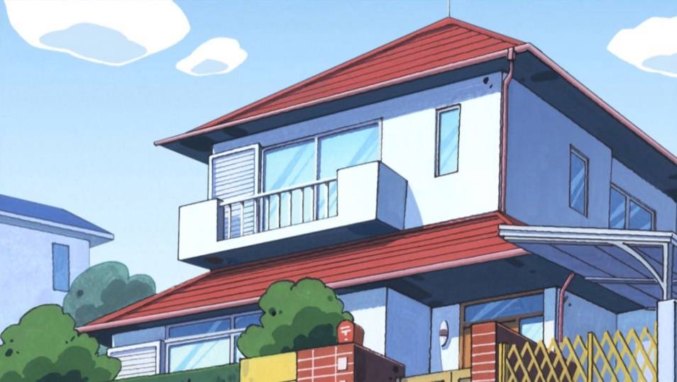 | 春日部位于日本关东南部，埼玉县东部，是一座很小的城市，面积只有65平方公里，人口20余万，但是这座小城因蜡笔小新而走向世界，名气甚至不亚于东京！ 整座城市围绕着蜡笔小新一家“团团转”，市内随处可见的蜡笔小新元素。 |
| 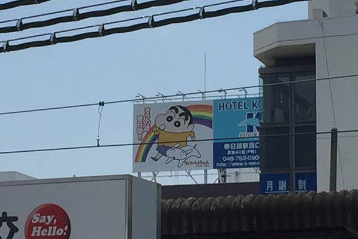 | 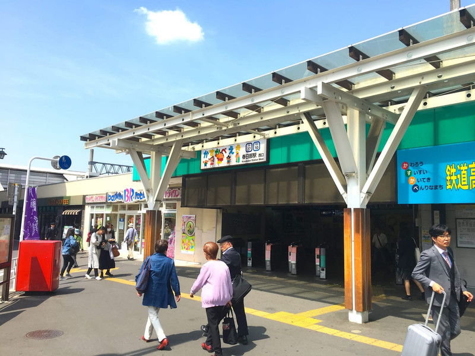 | 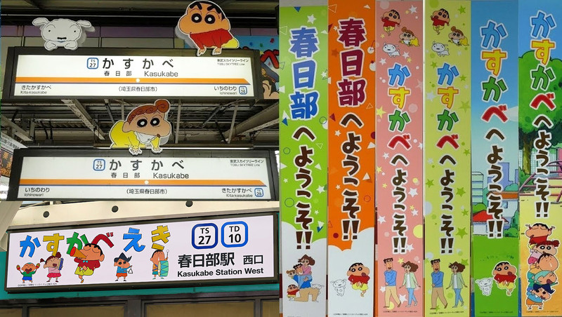 | 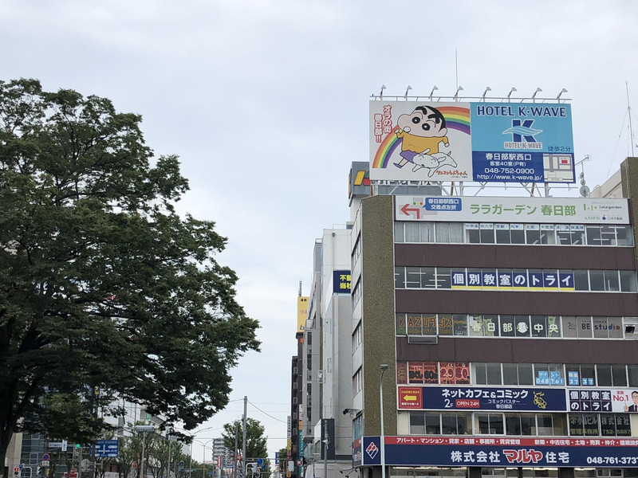 |
| 春日部的旅游攻略 |
1️⃣交通信息：我的坐法是都内出发然后在北千住换乘Tobu skytree line去春日部站。‼️特别提醒：如果坐特急需要加购550円的乘车券（图2），不是特别赶时间真的没必要，因为根本快不了几分钟…（我是因为当时和同学约的时间快迟到了，这是google推的最快方法😅） 2️⃣游玩攻略：其实如果不是特地打卡小新相关的话，春日部不是一个特别值得来一趟的地方。但如果你喜欢小新，那么就非常必要来一趟了😉 ✨春日部站：一下车就是满满的小新元素，无论是东口还是西口都值得打卡。顺带一提原来很美貌复古的东口现在已经翻新了，总觉得少了一点味道。（图3） ✨Lalagarden: 总的来说，春日部的商业综合体主要是两个：Lalagarden以及Ito Yokado（伊藤洋华堂）。其中Lalagarden的三楼（顶楼）有一个小新集合店+游客中心，非常值得打卡和拍照（图5-6）P. S. 3楼有一家叫做“富金豚“的猪排非常好吃，且性价比不错。这里的大头贴机也有小新他们的幼稚园园服可以穿😆 ✨春日部市役所：第二个必要打卡的地点应该就是市役所了，这里的政务大厅有一个属于野原一家的小角落，甚至有野原一家的住民票（residential certificate），这点真的是太可爱了🥺另外还有官方制作的攻略手册《蜡笔小新：春日部散步地图》，跟着走就对了（详见最后一张图） ✨最后打卡的地方是美伢最爱血拼的商场Sato kokonokado的原型Ito Yokado（伊藤洋华堂）。商场3楼有一个属于小新的展区，也有周边售卖。另外，负一楼有一个7&i holding的大型超市，东西比起711便利店更加实惠，也是我第一次见它的大型超市。 |
| 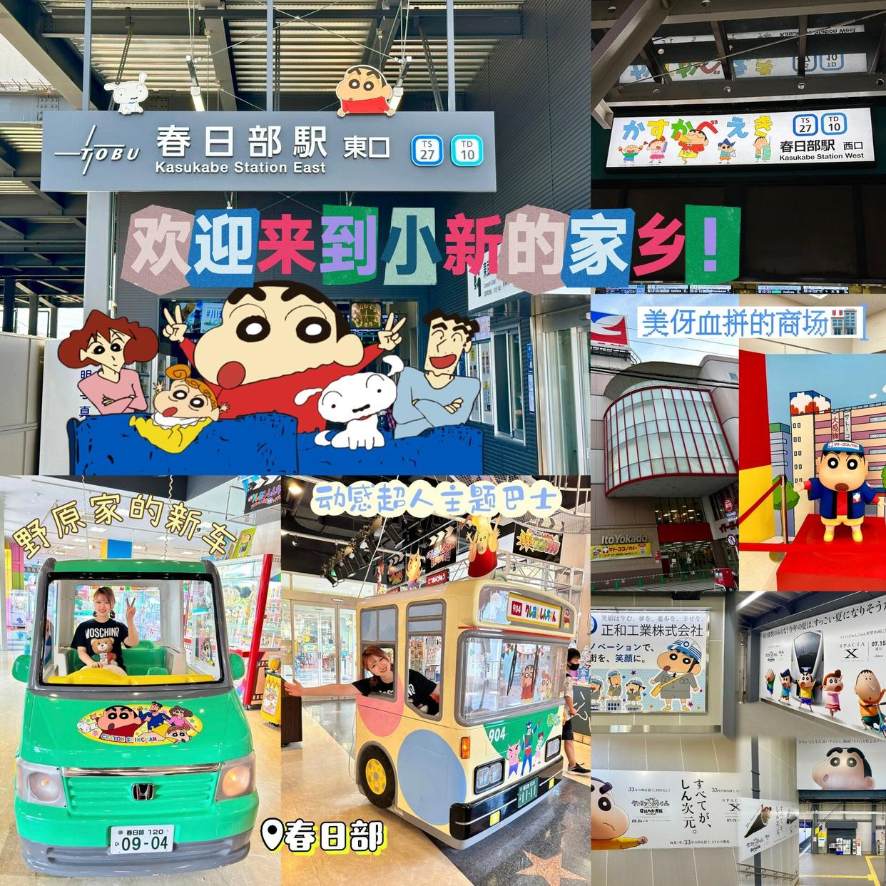 | 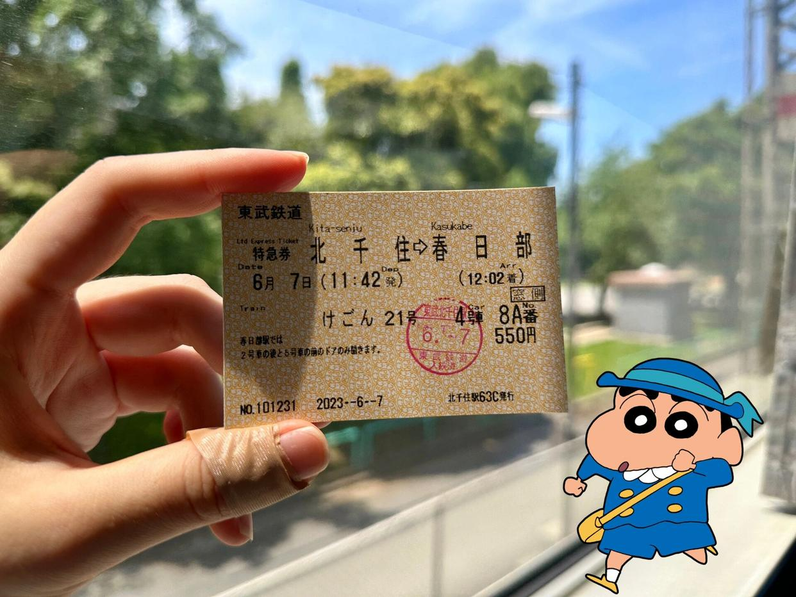 | 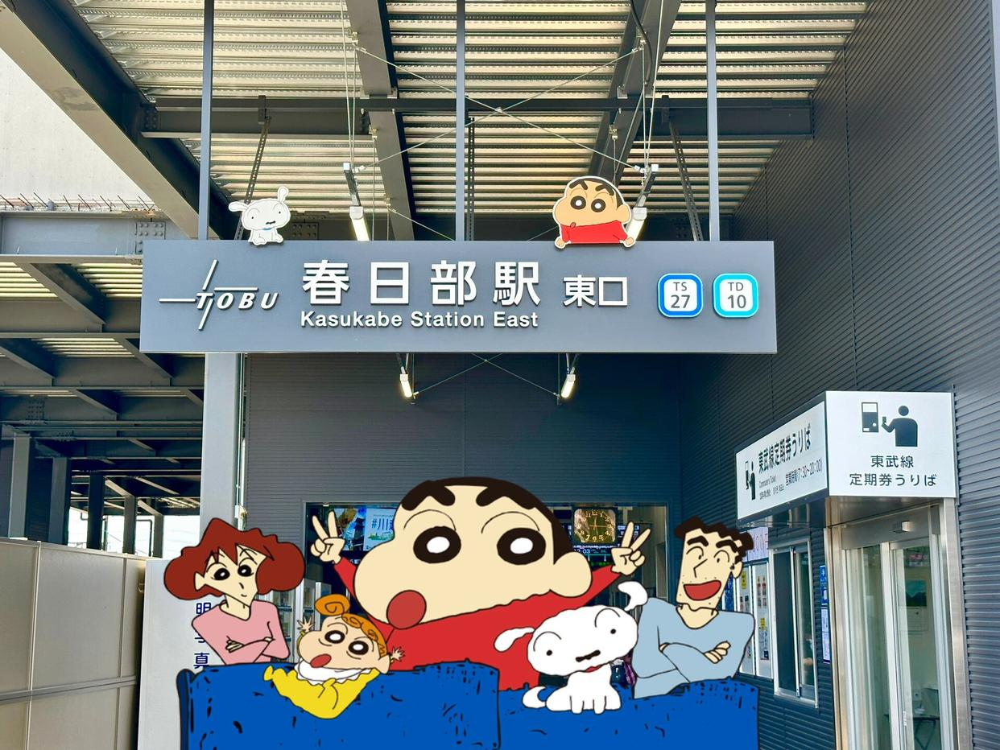 |
| 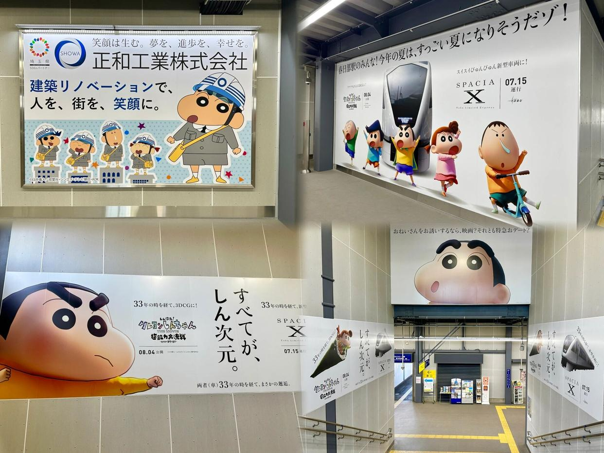 | 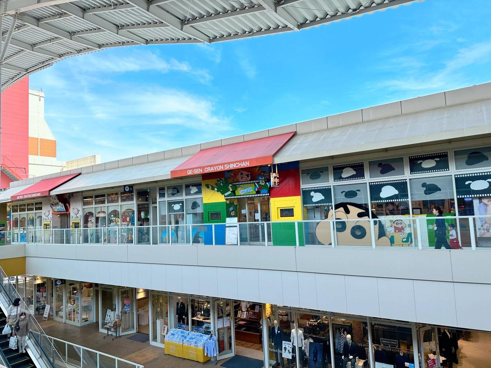 | 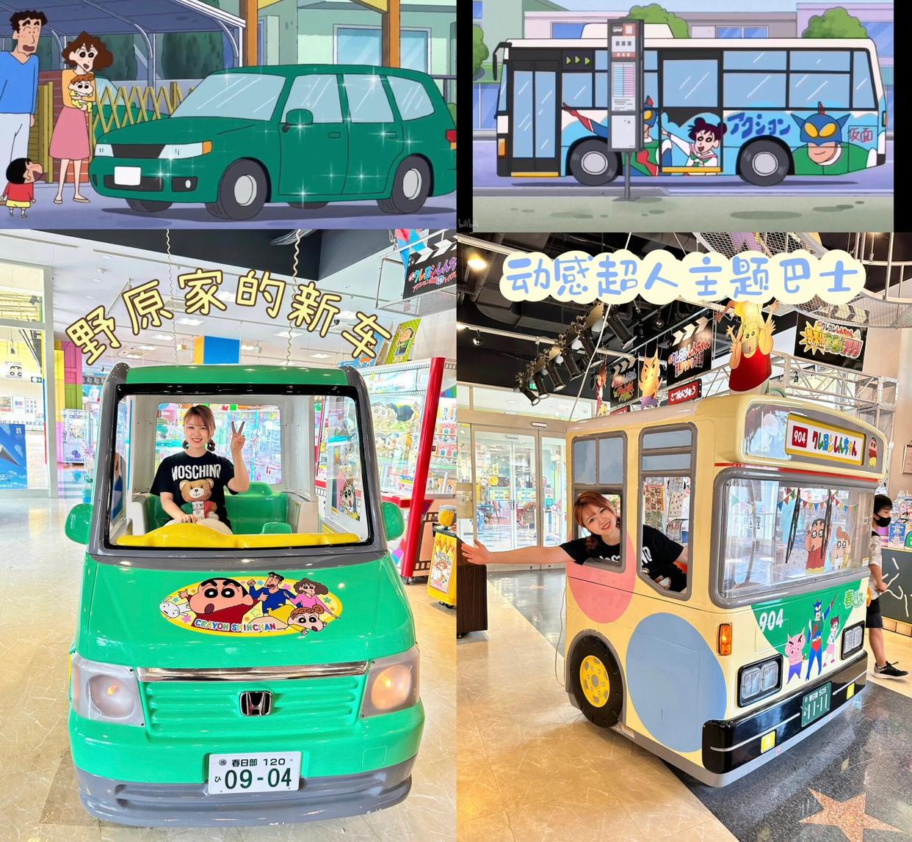 |
| 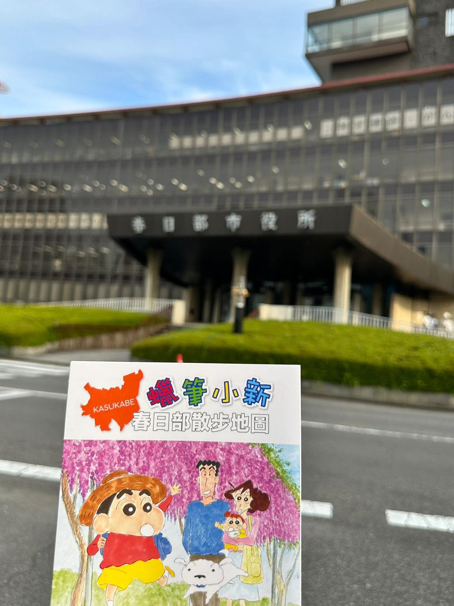 | 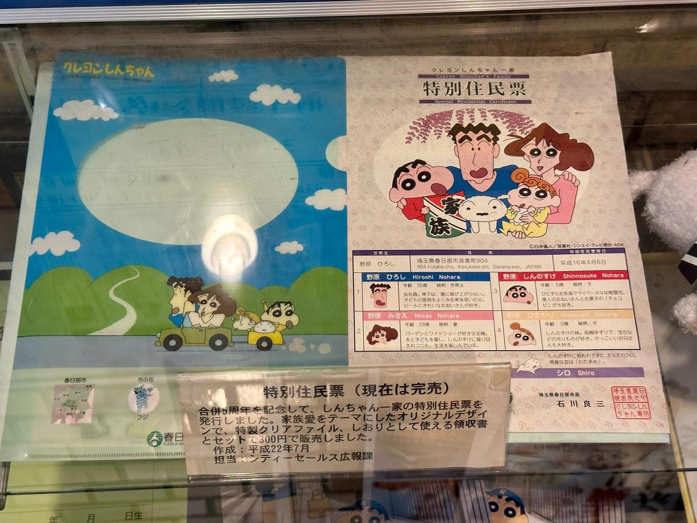 | 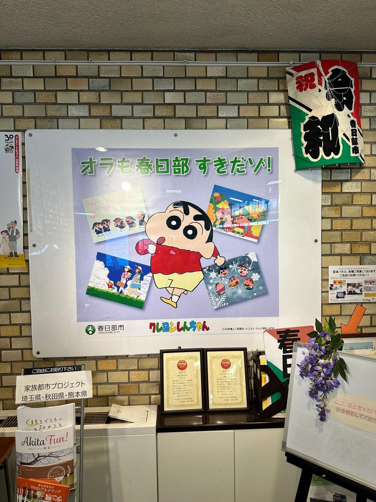 |